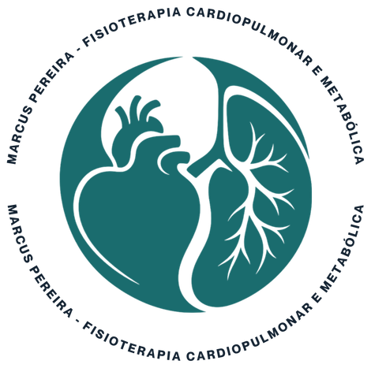
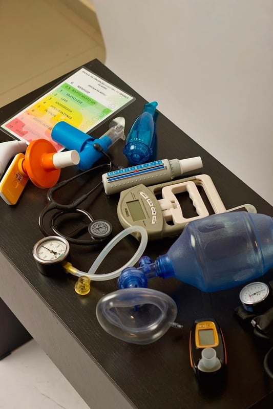

01
Fisioterapia Respiratória
Check-up respiratório e recuperação da função pulmonar, em consultório ou em domicílio.
Fisioterapia Cardiopulmonar e Metabólica · Rio de Janeiro
Atendimento especializado em fisioterapia cardiopulmonar, fisioterapia motora para idosos, check-up respiratório e espirometria, com atendimento em consultório e também no conforto da sua casa.

Serviços
Check-up respiratório e recuperação da função pulmonar, em consultório ou em domicílio.
Reabilitação cardiopulmonar para pacientes cardíacos e de pós-operatório.
Fisioterapia motora para idosos, com foco em autonomia, força e qualidade de vida.
Método
Realizamos uma avaliação detalhada para compreender sua condição clínica, histórico de saúde e objetivos. A partir dessa análise, elaboramos um plano de tratamento individualizado.
Desenvolvemos um acompanhamento personalizado, com técnicas baseadas em evidências científicas para promover a recuperação da função respiratória, motora e melhorar sua qualidade de vida.
Monitoramos continuamente sua evolução e ajustamos o tratamento sempre que necessário. O acompanhamento pode ser realizado no consultório ou em domicílio, oferecendo conforto, segurança e um atendimento humanizado.
Estrutura
Espirometria
Realizamos exames de espirometria com equipamentos de alta precisão para avaliar a função pulmonar, auxiliar no diagnóstico, monitorar doenças respiratórias e acompanhar a evolução do tratamento.
PowerBreathe K5
Tecnologia avançada para avaliação e treinamento da musculatura respiratória, proporcionando resultados precisos e um tratamento mais personalizado.

Estrutura completa
Contamos com uma estrutura equipada com recursos modernos para reabilitação cardiopulmonar e motora, proporcionando tratamentos mais eficazes, seguros e individualizados, tanto no consultório quanto no atendimento domiciliar.
Dúvidas
Não encontrou sua dúvida? Fale direto com a gente pelo WhatsApp.
Tirar dúvidasA fisioterapia cardiopulmonar é indicada para pessoas com doenças respiratórias ou cardíacas, pacientes no pós-operatório, idosos e indivíduos que desejam melhorar a capacidade respiratória, o condicionamento físico e a qualidade de vida.
O tratamento segue os mesmos princípios técnicos. A principal diferença é o local de atendimento, permitindo que pacientes com dificuldade de locomoção recebam cuidados especializados no conforto de casa.
Sim. Oferecemos atendimento em consultório e também em domicílio, proporcionando mais conforto, segurança e praticidade, especialmente para idosos, pessoas com mobilidade reduzida e pacientes em processo de reabilitação.
Agendar avaliação
Para quaisquer perguntas sobre o programa, entre em contato com
ft.marcuspereira@gmail.com